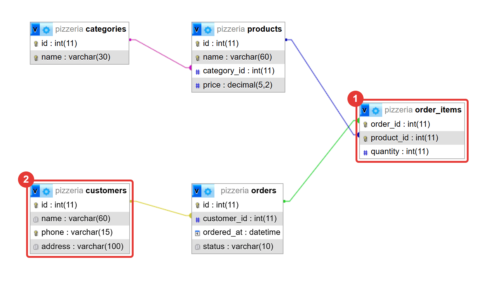
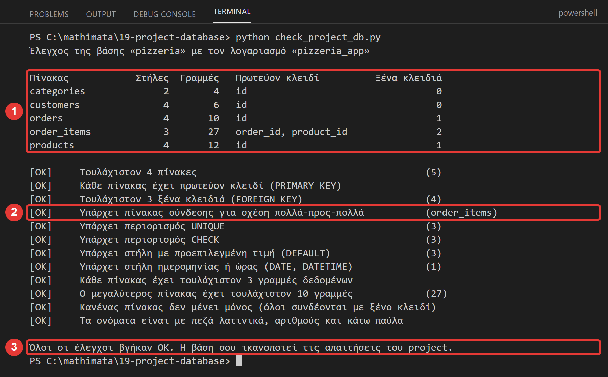
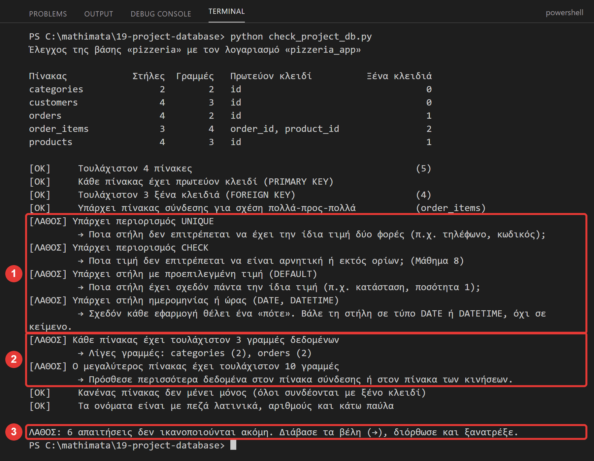
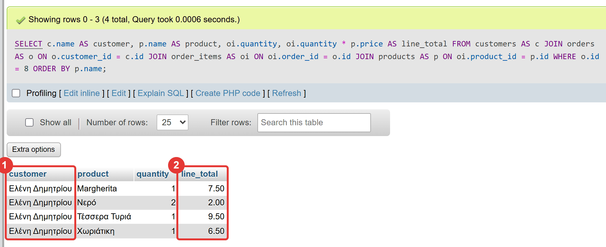

Μάθημα 19: Project (1/2): από την ιδέα στη βάση¶
Βάση δεδομένων: σχεδιασμός μιας δικής σου βάσης από το μηδέν (ερωτήσεις, πίνακες, σχέσεις, κανόνες), CREATE TABLE με όσα έμαθες, δεδομένα δοκιμής, λογαριασμός εφαρμογής, έλεγχος με την information_schema
Διάρκεια: 2 κύκλοι × περίπου 45′ εργασία (2 διδακτικές ώρες). Δουλεύετε σε ζεύγη.
Φύλλο εργασίας
Αυτή η σελίδα εξηγεί τα βήματα. Οι ασκήσεις και οι οδηγίες για κάθε κύκλο βρίσκονται στο Φύλλο εργασίας 19. Δούλεψε με τις δύο σελίδες ανοιχτές.
Αρχεία εργαστηρίου¶
| Αρχείο | Κύκλος | Τι είναι |
|---|---|---|
| project-design.txt | 1 | το έντυπο σχεδιασμού που συμπληρώνεις |
| example/ | 1–2 | το παράδειγμα της πιτσαρίας: project-design.txt, 01-schema.sql, 02-data.sql, 04-queries.sql |
| 01-schema.sql, 02-data.sql, 04-queries.sql | 2 | σκελετοί: τα γράφεις εσύ για τη δική σου βάση |
| 03-account.sql | 2 | σκελετός με τρία κενά |
| config.py, config_local.example.py, db.py | 2 | οι ρυθμίσεις και η σύνδεση του project σου |
| check_project_db.py | 2 | έτοιμος έλεγχος της βάσης σου |
Σε αυτό το μάθημα δεν υπάρχει έτοιμη λύση για το δικό σου θέμα: υπάρχει ένα παράδειγμα (η πιτσαρία) που δείχνει κάθε βήμα, και εσείς κάνετε τα ίδια βήματα για δικό σας θέμα.
Η αποστολή¶
Στα Μαθήματα 19 και 20 φτιάχνεις, μαζί με έναν συμμαθητή, μια δική σας εφαρμογή με βάση δεδομένων: από την ιδέα μέχρι το πρόγραμμα που τρέχει.
- Σήμερα (19): η βάση. Διαλέγετε θέμα, σχεδιάζετε πίνακες και σχέσεις, φτιάχνετε τη βάση και τη γεμίζετε με δεδομένα δοκιμής.
- Την επόμενη φορά (20): το πρόγραμμα σε Python που δουλεύει πάνω σε αυτή τη βάση, ο πίνακας δοκιμών και η παρουσίαση.
Όλα όσα έμαθες χρησιμοποιούνται εδώ: τύποι και κλειδιά (Μαθήματα 1–2), κανόνες UNIQUE/CHECK/DEFAULT (8), ημερομηνίες (9), ξένα κλειδιά και πίνακες σύνδεσης (11, 14), JOIN και ομάδες (10, 12, 16), λογαριασμός με λίγα δικαιώματα (17) και αντίγραφο ασφαλείας (18).
Στο τέλος θα μπορείς¶
- να ξεκινάς έναν σχεδιασμό από ερωτήσεις, και να βρίσκεις από αυτές τους πίνακες και τις σχέσεις.
- να διαλέγεις τύπους και κανόνες (
NOT NULL,UNIQUE,DEFAULT,CHECK, ξένο κλειδί) για κάθε στήλη. - να υλοποιείς μια σχέση ένα-προς-πολλά (ξένο κλειδί) και μια σχέση πολλά-προς-πολλά (πίνακας σύνδεσης, και με επιπλέον στήλη).
- να γράφεις ένα
schema.sqlπου ξανατρέχει όσες φορές θέλεις, και δεδομένα δοκιμής που ελέγχουν το σχέδιο. - να ελέγχεις τη βάση σου με το
check_project_db.pyκαι να διαβάζεις το διάγραμμά της στο Designer του phpMyAdmin. - να αποδεικνύεις ότι το σχέδιο δουλεύει, με πέντε ερωτήματα SQL διαφορετικού είδους.
Πριν αρχίσεις¶
- Ξεκίνα τη MySQL και τον Apache από το XAMPP Control Panel.
- Φτιάξε έναν φάκελο
19-project-databaseκαι κατέβασε εκεί τα αρχεία του πίνακα (τα αρχεία του φακέλουexampleκράτα τα σε υποφάκελοexample). Άνοιξε τον φάκελο στο VS Code και άνοιξε τερματικό. - Βρες συμμαθητή. Δουλεύετε σε έναν υπολογιστή, και αλλάζετε ρόλους: ένας γράφει, ο άλλος διαβάζει και ελέγχει. Αλλάζετε κάθε 10′ περίπου.
- Οι βάσεις του project δεν αγγίζουν τη
game_library: κάθε ζεύγος φτιάχνει δική του βάση, με δικό της όνομα.
Μόνο φανταστικά στοιχεία
Στα δεδομένα δοκιμής βάζεις φανταστικά ονόματα, τηλέφωνα και διευθύνσεις. Ποτέ πραγματικά προσωπικά στοιχεία συμμαθητών, καθηγητών ή άλλων ανθρώπων.
Ο κύκλος εργασίας
Πρόβλεψη → εκτέλεση → σύγκριση → εξήγηση. Σήμερα πρόβλεψε τι θα απαντήσει η βάση πριν τρέξεις κάθε ερώτημα, και ποιο κανόνα θα παραβιάσει μια τιμή πριν τη δοκιμάσεις.
Κύκλος 1 — Από την ιδέα στο σχέδιο¶
Σε αυτόν τον κύκλο δεν γράφεις ακόμη SQL. Σχεδιάζεις στο έντυπο project-design.txt. Ένα καλό σχέδιο κάνει τη SQL του επόμενου κύκλου σχεδόν μηχανική δουλειά.
1.1 Ξεκίνα από τις ερωτήσεις¶
Οι αρχάριοι ξεκινούν από τους πίνακες. Οι έμπειροι ξεκινούν από τις ερωτήσεις: τι πρέπει να μπορεί να απαντήσει η βάση; Αν μια ερώτηση δεν απαντιέται από το σχέδιο, το σχέδιο έχει τρύπα.
Το παράδειγμά μας είναι η πιτσαρία «Φούρνος»: κρατά πελάτες και παραγγελίες. Οι πέντε ερωτήσεις της (κάθε μία διαφορετικού είδους):
| # | Ερώτηση | Είδος |
|---|---|---|
| 1 | Ποια προϊόντα κοστίζουν λιγότερο από 8 €, με τα φθηνότερα πρώτα; | φίλτρο και ταξινόμηση |
| 2 | Τι περιέχει η παραγγελία 8 και ποιος πελάτης την έκανε; | στοιχεία από πολλούς πίνακες |
| 3 | Πόσα έσοδα έχει φέρει κάθε κατηγορία προϊόντων; | σύνολα ανά ομάδα |
| 4 | Ποιοι πελάτες δεν έχουν κάνει καμία παραγγελία; | «ποιοι δεν έχουν ποτέ …» |
| 5 | Ποια είναι τα τρία πιο δημοφιλή προϊόντα; | «τα πιο …» |
Για να απαντήσει η βάση στην ερώτηση 3, χρειάζεται να ξέρει σε ποια κατηγορία ανήκει κάθε προϊόν και πόσα τεμάχια πουλήθηκαν. Αυτό προδιαγράφει τους πίνακες.
1.2 Οι πίνακες: από τα «πράγματα» στις στήλες¶
Πίνακας είναι μια συλλογή από ίδιου είδους πράγματα: πελάτες, προϊόντα, παραγγελίες. Βρες τους πίνακες από τα ουσιαστικά των ερωτήσεων. Για κάθε υποψήφιο πίνακα ρώτα:
- Θα έχω πολλά τέτοια πράγματα; (αλλιώς δεν χρειάζεται πίνακας)
- Κάθε ένα έχει δική του ταυτότητα; (αλλιώς είναι στήλη κάποιου άλλου πίνακα)
- Η μία γραμμή του πίνακα παριστάνει ένα πράγμα, π.χ. έναν πελάτη; (αλλιώς σπάσε τον πίνακα)
Οι στήλες είναι τα χαρακτηριστικά του πράγματος. Κάθε πίνακας έχει ένα id (INT, AUTO_INCREMENT, πρωτεύον κλειδί). Για τους τύπους:
| Τι αποθηκεύεις | Τύπος | Παράδειγμα |
|---|---|---|
| ακέραιος αριθμός, ταυτότητα | INT |
id, quantity |
| κείμενο με όριο μήκους | VARCHAR(n) |
name VARCHAR(60) |
| χρήματα, τιμές | DECIMAL(5,2) (ποτέ FLOAT) |
price DECIMAL(5,2) |
| ημερομηνία | DATE |
birth_date |
| ημερομηνία και ώρα | DATETIME |
ordered_at |
Τα ονόματα γράφονται με πεζά λατινικά και κάτω παύλα: πίνακες στον πληθυντικό (customers, order_items), στήλες στον ενικό (phone, ordered_at), ξένο κλειδί = ενικός του γονέα + _id (customer_id). Το check_project_db.py το ελέγχει.
1.3 Οι σχέσεις¶
Δύο πίνακες συνδέονται με μία από δύο σχέσεις. Ρώτα, και προς τις δύο κατευθύνσεις:
| Ερώτηση | Απάντηση | Σχέση | Υλοποίηση |
|---|---|---|---|
| Ένας πελάτης έχει πολλές παραγγελίες; Μια παραγγελία έχει έναν πελάτη; | ναι / ναι | ένα-προς-πολλά (1:N) | ξένο κλειδί στον πίνακα της πολλαπλής πλευράς (orders.customer_id) |
| Μια παραγγελία έχει πολλά προϊόντα; Ένα προϊόν είναι σε πολλές παραγγελίες; | ναι / ναι | πολλά-προς-πολλά (N:N) | πίνακας σύνδεσης με δύο ξένα κλειδιά (order_items) |
Ο πίνακας σύνδεσης (Μάθημα 14) έχει πρωτεύον κλειδί από δύο στήλες που είναι και οι δύο ξένα κλειδιά. Αν η σχέση έχει δικά της στοιχεία (εδώ: πόσα τεμάχια), αυτά γίνονται επιπλέον στήλες του πίνακα σύνδεσης:
| order_id | product_id | quantity |
|---|---|---|
| 8 | 1 | 1 |
| 8 | 10 | 2 |
Η ποσότητα δεν ανήκει ούτε στην παραγγελία ούτε στο προϊόν: ανήκει στο ζευγάρι τους.
1.4 Οι κανόνες¶
Οι κανόνες προστατεύουν τα δεδομένα (θυμήσου: το XAMPP δεν είναι αυστηρό και δέχεται σιωπηλά λάθος τιμές, Μάθημα 8). Για κάθε στήλη ρώτα:
| Ερώτηση | Κανόνας | Παράδειγμα της πιτσαρίας |
|---|---|---|
| Μπορεί να λείπει; | NOT NULL (αλλιώς NULL) |
κάθε πελάτης έχει όνομα |
| Μπορεί να επαναλαμβάνεται; | UNIQUE |
ένα τηλέφωνο, ένας πελάτης |
| Έχει συνηθισμένη τιμή; | DEFAULT |
κατάσταση 'new', ποσότητα 1 |
| Έχει όρια; | CHECK |
τιμή > 0, ποσότητα 1–20, κατάσταση ανάμεσα σε τρεις επιτρεπόμενες |
| Δείχνει σε άλλον πίνακα; | ξένο κλειδί (FOREIGN KEY) |
η παραγγελία δείχνει σε έναν πελάτη που υπάρχει |
1.5 Πέντε συνηθισμένα λάθη σχεδιασμού¶
| Λάθος | Παράδειγμα | Διόρθωση |
|---|---|---|
| Λίστα μέσα σε στήλη | products = 'Margherita, Κόκα Κόλα' στην παραγγελία |
πίνακας σύνδεσης (Μάθημα 14) |
| Επανάληψη κειμένου αντί για πίνακα | category = 'Πίτσες' σε κάθε προϊόν |
πίνακας categories και ξένο κλειδί (Μάθημα 11) |
| Υπολογισμένη τιμή αποθηκευμένη | στήλη order_total |
δεν την αποθηκεύεις: την υπολογίζεις με SUM (Μάθημα 10) |
| Ημερομηνία ως κείμενο | '26/10/2026' σε VARCHAR |
τύπος DATE ή DATETIME (Μάθημα 9) |
| Στήλες με αριθμό | phone1, phone2, phone3 |
ξεχωριστός πίνακας, με ξένο κλειδί |
Στάδιο 1 — Γνωριμία με το παράδειγμα¶
Πριν σχεδιάσεις τα δικά σου, φόρτωσε το παράδειγμα και δες το. Στο phpMyAdmin, καρτέλα Import (χωρίς επιλεγμένη βάση), τρέξε τα example/01-schema.sql και μετά example/02-data.sql. Φτιάχνεται η βάση pizzeria (δεν είναι η δική σου).
Επίλεξε τη βάση pizzeria και άνοιξε το Designer (καρτέλα More → Designer). Δείχνει τους πίνακες και τις σχέσεις τους ως γραμμές:

Διάβασέ το: η γραμμή ξεκινά από το ξένο κλειδί του «παιδιού» και καταλήγει στο πρωτεύον κλειδί του «γονέα». Οι categories και customers είναι γονείς (δεν δείχνουν σε κανέναν). Ο order_items είναι παιδί και των δύο orders και products: είναι ο πίνακας σύνδεσης.
Μετά άνοιξε το example/project-design.txt: έτσι πρέπει να είναι συμπληρωμένο το δικό σου έντυπο.
Στάδιο 2 — Το δικό σου σχέδιο¶
Συμπλήρωσε το project-design.txt, με τη σειρά, ακολουθώντας το Φύλλο εργασίας:
- Θέμα και όνομα βάσης. Διάλεξε ένα θέμα από τον πίνακα, ή δικό σου με τη σύμφωνη γνώμη του διδάσκοντα.
- Πέντε ερωτήσεις (τμήμα 2 του εντύπου), διαφορετικού είδους η καθεμιά.
- Πίνακες και στήλες (τμήμα 3): τουλάχιστον τέσσερις πίνακες.
- Σχέσεις (τμήμα 4): τουλάχιστον μία 1:N και μία N:N (με πίνακα σύνδεσης).
- Κανόνες: για κάθε στήλη (στη στήλη «Κανόνες» του τμήματος 3).
| Θέμα | Ιδέες για πίνακες | Πιθανή σχέση N:N |
|---|---|---|
| Κτηνιατρείο | ιδιοκτήτες, ζώα, επισκέψεις, θεραπείες | επισκέψεις ↔ θεραπείες |
| Ταινιοθήκη / σινεμά | ταινίες, ηθοποιοί, είδη, προβολές | ταινίες ↔ ηθοποιοί |
| Αθλητικός σύλλογος | αθλητές, ομάδες, αγώνες | αθλητές ↔ αγώνες (με λεπτά συμμετοχής) |
| Ωδείο | μαθητές, καθηγητές, μαθήματα, όργανα | μαθητές ↔ μαθήματα |
| Ενοικίαση ποδηλάτων | πελάτες, ποδήλατα, ενοικιάσεις, σταθμοί | πελάτες ↔ ποδήλατα (ενοικίαση με ημερομηνίες) |
| Σχολικές εκδρομές | εκδρομές, μαθητές, τμήματα, λεωφορεία | εκδρομές ↔ μαθητές (εγγραφές) |
| Βιβλιοπωλείο | βιβλία, συγγραφείς, πελάτες, πωλήσεις | βιβλία ↔ συγγραφείς |
| Ξενοδοχείο | δωμάτια, πελάτες, κρατήσεις, υπηρεσίες | κρατήσεις ↔ υπηρεσίες |
| Συνταγές | συνταγές, υλικά, κατηγορίες | συνταγές ↔ υλικά (με ποσότητα) |
Όταν τελειώσετε, ανταλλάξτε έντυπα με άλλο ζεύγος και ελέγξτε το ο ένας του άλλου με τη λίστα του Φύλλου εργασίας: υπάρχει η σχέση που λείπει; Υπάρχει στήλη που είναι λίστα;
Συνέχισε στο Φύλλο εργασίας.
Κύκλος 2 — Από το σχέδιο στη βάση¶
Σε αυτόν τον κύκλο το σχέδιο γίνεται βάση: SQL, δεδομένα, λογαριασμός και έλεγχος.
2.1 Από το σχέδιο στο CREATE TABLE¶
Κάθε κομμάτι του σχεδίου έχει δική του γραμμή SQL:
| Στο σχέδιο | Στην SQL |
|---|---|
στήλη id, πρωτεύον κλειδί |
id INT NOT NULL AUTO_INCREMENT, … PRIMARY KEY (id) |
| στήλη που δεν επιτρέπεται κενή | … NOT NULL |
| στήλη που δεν επιτρέπεται να επαναλαμβάνεται | UNIQUE (στήλη) |
| συνηθισμένη τιμή | … DEFAULT 'new' ή, για ώρα, DEFAULT (NOW()) |
| όριο τιμών | CONSTRAINT chk_πίνακας_στήλη CHECK (συνθήκη) |
| σχέση 1:N | CONSTRAINT fk_παιδί_γονέας FOREIGN KEY (γονέας_id) REFERENCES γονέας (id) |
| σχέση N:N | πίνακας σύνδεσης, με PRIMARY KEY (α_id, β_id) και δύο FOREIGN KEY |
Δύο κανόνες για τη σειρά:
- Τους πίνακες τους φτιάχνεις πρώτα τους γονείς, μετά τα παιδιά (ένα ξένο κλειδί δείχνει σε πίνακα που πρέπει να υπάρχει ήδη).
- Τους σβήνεις (
DROP TABLE IF EXISTS) με την ανάποδη σειρά: πρώτα τα παιδιά, αλλιώς η βάση δίνει#1451(Μάθημα 11).
Έτσι το αρχείο ξανατρέχει όσες φορές θέλεις: κάθε φορά σβήνει και ξαναφτιάχνει τους πίνακες. Δες το παράδειγμα (η orders έχει DEFAULT και CHECK και ξένο κλειδί, η order_items είναι ο πίνακας σύνδεσης):
-- Καθαρισμός: πρώτα οι πίνακες που ΑΝΑΦΕΡΟΝΤΑΙ σε άλλους (τα «παιδιά»), μετά οι «γονείς»
DROP TABLE IF EXISTS order_items;
DROP TABLE IF EXISTS orders;
DROP TABLE IF EXISTS products;
DROP TABLE IF EXISTS customers;
DROP TABLE IF EXISTS categories;
-- Δημιουργία: πρώτα οι γονείς, μετά τα παιδιά
CREATE TABLE categories (
id INT NOT NULL AUTO_INCREMENT,
name VARCHAR(30) NOT NULL,
PRIMARY KEY (id),
UNIQUE (name)
);
CREATE TABLE customers (
id INT NOT NULL AUTO_INCREMENT,
name VARCHAR(60) NOT NULL,
phone VARCHAR(15) NOT NULL,
address VARCHAR(100) NOT NULL,
PRIMARY KEY (id),
UNIQUE (phone)
);
CREATE TABLE products (
id INT NOT NULL AUTO_INCREMENT,
name VARCHAR(60) NOT NULL,
category_id INT NOT NULL,
price DECIMAL(5,2) NOT NULL,
PRIMARY KEY (id),
UNIQUE (name),
CONSTRAINT chk_products_price CHECK (price > 0),
CONSTRAINT fk_products_category FOREIGN KEY (category_id) REFERENCES categories (id)
);
CREATE TABLE orders (
id INT NOT NULL AUTO_INCREMENT,
customer_id INT NOT NULL,
ordered_at DATETIME NOT NULL DEFAULT (NOW()),
status VARCHAR(10) NOT NULL DEFAULT 'new',
PRIMARY KEY (id),
CONSTRAINT chk_orders_status CHECK (status IN ('new', 'ready', 'delivered')),
CONSTRAINT fk_orders_customer FOREIGN KEY (customer_id) REFERENCES customers (id)
);
-- Πίνακας σύνδεσης με ΕΞΤΡΑ στήλη: δύο στήλες στο πρωτεύον κλειδί, και η quantity λέει «πόσα τεμάχια»
CREATE TABLE order_items (
order_id INT NOT NULL,
product_id INT NOT NULL,
quantity INT NOT NULL DEFAULT 1,
PRIMARY KEY (order_id, product_id),
CONSTRAINT chk_items_quantity CHECK (quantity BETWEEN 1 AND 20),
CONSTRAINT fk_items_order FOREIGN KEY (order_id) REFERENCES orders (id),
CONSTRAINT fk_items_product FOREIGN KEY (product_id) REFERENCES products (id)
);
Στάδιο 3 — Το σχήμα της βάσης σου¶
Άνοιξε το 01-schema.sql (σκελετός). Αντικατέστησε το my_project με το όνομα της βάσης σου (VS Code: Ctrl+H, «Αντικατάσταση όλων»). Γράψε τα DROP TABLE και τα CREATE TABLE της βάσης σου, με βάση το project-design.txt. Τρέξε το με Import (χωρίς επιλεγμένη βάση).
Αν η βάση δώσει σφάλμα, διάβασε το μήνυμα (Μάθημα 2) και διόρθωσε: τα πιο συνηθισμένα είναι #1064 (σύνταξη: ξεχασμένο κόμμα ή παρένθεση) και #1005 … Foreign key constraint is incorrectly formed. Το #1005 βγαίνει όταν το ξένο κλειδί δεν ταιριάζει με το πρωτεύον κλειδί του γονέα (πρέπει να έχουν ίδιο τύπο και μέγεθος) ή όταν ο πίνακας-γονέας δεν υπάρχει ακόμη (λάθος σειρά δημιουργίας).
2.2 Δεδομένα δοκιμής¶
Μια βάση χωρίς δεδομένα δεν δοκιμάζεται. Τα δεδομένα δοκιμής πρέπει να είναι αρκετά και να έχουν «δύσκολες» περιπτώσεις:
- Σειρά: πρώτα οι γονείς, μετά τα παιδιά, τελευταίος ο πίνακας σύνδεσης (αλλιώς
#1452: ο γονέας δεν υπάρχει). - Ποσότητα: τουλάχιστον 3 γραμμές σε κάθε πίνακα και 10 ή περισσότερες στον πίνακα σύνδεσης ή των κινήσεων.
- Δύσκολες περιπτώσεις: ένας πελάτης χωρίς παραγγελίες, ένα προϊόν που δεν πουλήθηκε ποτέ, ένα όνομα με τόνους. Αυτές τις περιπτώσεις θα ζητήσουν οι ερωτήσεις σου (π.χ. η ερώτηση 4 της πιτσαρίας).
- Φανταστικά στοιχεία.
Δες πώς γεμίζει ο πίνακας σύνδεσης της πιτσαρίας (27 γραμμές):
INSERT INTO order_items (order_id, product_id, quantity) VALUES
(1, 1, 2), (1, 9, 2),
(2, 2, 1), (2, 5, 1), (2, 11, 1),
(3, 7, 1), (3, 10, 1),
(4, 3, 1), (4, 4, 1), (4, 9, 2),
(5, 1, 2), (5, 6, 1), (5, 11, 2),
(6, 5, 2), (6, 8, 1),
(7, 2, 2), (7, 9, 2), (7, 11, 1),
(8, 1, 1), (8, 3, 1), (8, 7, 1), (8, 10, 2),
(9, 4, 1), (9, 9, 1),
(10, 2, 1), (10, 6, 1), (10, 11, 2);
Στάδιο 4 — Τα δεδομένα και ο λογαριασμός¶
- Γράψε το
02-data.sql(σκελετός), με το όνομα της βάσης σου, και τρέξ' το μετά το01-schema.sql. - Στο
03-account.sqlσυμπλήρωσε τα τρία κενά και αντικατάστησε τοmy_project. Τρέξ' το ωςroot(στο phpMyAdmin είσαι ήδηroot), ένα ερώτημα τη φορά. Όπως στο Μάθημα 17: η εφαρμογή δεν συνδέεται ωςroot· παίρνει δικό της λογαριασμό, με δικαιώματα μόνο στη βάση του project. - Αντίγραψε το
config_local.example.pyωςconfig_local.py. Στοconfig.pyάλλαξε τοmy_projectστο όνομα της βάσης σου. - Τρέξε τον έλεγχο:
Το πρόγραμμα συνδέεται ως ο λογαριασμός σου και διαβάζει από την information_schema (το «βιβλίο περιγραφής» του εξυπηρετητή: ξέρει τους πίνακες, τα κλειδιά και τους περιορισμούς κάθε βάσης) πώς είναι φτιαγμένη η βάση σου. Ελέγχει τις ελάχιστες απαιτήσεις του project, και για κάθε αποτυχία σου λέει τι να σκεφτείς. Έτσι μοιάζει όταν η βάση ικανοποιεί τις απαιτήσεις (εδώ για την πιτσαρία):

Και έτσι μοιάζει ένα πρόχειρο σχήμα: ο έλεγχος δείχνει τι λείπει και βάζει βέλος (→) με υπόδειξη:

Οι απαιτήσεις του project
Το check_project_db.py ζητά: τουλάχιστον 4 πίνακες, πρωτεύον κλειδί σε κάθε πίνακα, τουλάχιστον 3 ξένα κλειδιά, έναν πίνακα σύνδεσης (N:N), και τουλάχιστον ένα UNIQUE, ένα CHECK, ένα DEFAULT και μία στήλη DATE/DATETIME. Ζητά και δεδομένα (τουλάχιστον 3 γραμμές σε κάθε πίνακα, 10 στον μεγαλύτερο), κανένας πίνακας μόνος (όλοι συνδέονται με ξένο κλειδί) και σωστά ονόματα. Είναι ελάχιστα: ένα καλό project τα ξεπερνά.
2.3 Οι ερωτήσεις γίνονται SQL¶
Το σχέδιο είναι σωστό όταν η βάση απαντά στις ερωτήσεις του. Στο 04-queries.sql γράφεις ένα ερώτημα για κάθε μία από τις πέντε ερωτήσεις σου. Πρόσεξε τα πέντε είδη, όπως στην πιτσαρία. Πρόβλεψε πρώτα πόσες γραμμές θα βγουν.
-- Οι πέντε ερωτήσεις της βάσης «pizzeria»: το ΠΑΡΑΔΕΙΓΜΑ του Μαθήματος 19 (δεν είναι η δική σου βάση).
--
-- Κάθε ερώτηση είναι ένα ερώτημα SQL. Τρέξε τα ένα-ένα στην καρτέλα SQL της βάσης pizzeria.
-- Οι ερωτήσεις καλύπτουν διαφορετικά εργαλεία: φίλτρο, JOIN πολλών πινάκων, ομάδες, LEFT JOIN και ταξινόμηση με όριο.
USE pizzeria;
-- Ερώτηση 1: Ποια προϊόντα κοστίζουν λιγότερο από 8 €, με τα φθηνότερα πρώτα; (WHERE, ORDER BY)
SELECT name, price
FROM products
WHERE price < 8
ORDER BY price, name;
-- Ερώτηση 2: Τι περιέχει η παραγγελία 8 και ποιος πελάτης την έκανε; (JOIN τεσσάρων πινάκων)
SELECT c.name AS customer, p.name AS product, oi.quantity, oi.quantity * p.price AS line_total
FROM customers AS c
JOIN orders AS o ON o.customer_id = c.id
JOIN order_items AS oi ON oi.order_id = o.id
JOIN products AS p ON oi.product_id = p.id
WHERE o.id = 8
ORDER BY p.name;
-- Ερώτηση 3: Πόσα έσοδα έχει φέρει κάθε κατηγορία προϊόντων; (JOIN, GROUP BY, SUM)
SELECT ca.name AS category, SUM(oi.quantity * p.price) AS revenue
FROM categories AS ca
JOIN products AS p ON p.category_id = ca.id
JOIN order_items AS oi ON oi.product_id = p.id
GROUP BY ca.id, ca.name
ORDER BY revenue DESC;
-- Ερώτηση 4: Ποιοι πελάτες δεν έχουν κάνει καμία παραγγελία; (LEFT JOIN, IS NULL)
SELECT c.name, c.phone
FROM customers AS c
LEFT JOIN orders AS o ON o.customer_id = c.id
WHERE o.id IS NULL;
-- Ερώτηση 5: Ποια είναι τα τρία πιο δημοφιλή προϊόντα (σύνολο τεμαχίων); (SUM, ORDER BY, LIMIT)
SELECT p.name, SUM(oi.quantity) AS pieces
FROM products AS p
JOIN order_items AS oi ON oi.product_id = p.id
GROUP BY p.id, p.name
ORDER BY pieces DESC, p.name
LIMIT 3;
Η ερώτηση 2 περνά από τέσσερις πίνακες (customers, orders, order_items, products): το JOIN ακολουθεί τα ξένα κλειδιά, ένα βήμα τη φορά, όπως τις έχεις δει στο Designer:

Στάδιο 5 — Οι ερωτήσεις του project σου¶
Άνοιξε το 04-queries.sql (σκελετός), αντικατέστησε το my_project, και γράψε τα πέντε ερωτήματα. Τρέξε τα ένα-ένα στην καρτέλα SQL της βάσης σου. Αν κάποια ερώτηση δεν απαντιέται, το σχέδιο έχει τρύπα: σκέψου ποιος πίνακας ή ποια στήλη λείπει, και διόρθωσε το 01-schema.sql.
2.4 Αντίγραφο ασφαλείας και παράδοση¶
Πριν κλείσεις, πάρε αντίγραφο ασφαλείας της βάσης σου (Μάθημα 18) με το mariadb-dump:
$bin = "C:\xampp\mysql\bin"
& "$bin\mariadb-dump.exe" --user=root --default-character-set=utf8mb4 --single-transaction --databases my_project --result-file=my_project.sql
(Βάλε το όνομα της βάσης σου.) Χρησιμοποίησε το mariadb-dump και όχι το Export του phpMyAdmin, που στην έκδοση που δοκιμάσαμε χάνει τους περιορισμούς CHECK. Το αντίγραφο είναι το σωσίβιο σου και ο τρόπος να μεταφέρεις τη βάση σε άλλον υπολογιστή για το Μάθημα 20.
Τι παραδίδεις σήμερα (φάκελος του ζεύγους):
- □
project-design.txtσυμπληρωμένο· - □
01-schema.sql,02-data.sql,03-account.sql,04-queries.sqlγραμμένα για τη δική σας βάση· - □
python check_project_db.pyμε όλες τις γραμμές[OK]· - □ ένα στιγμιότυπο του Designer (διάγραμμα της βάσης σας)·
- □ το αντίγραφο ασφαλείας (
.sql).
Συνέχισε στο Φύλλο εργασίας, Κύκλος 2.
Έλεγχος πριν ολοκληρώσεις¶
- □ Το σχέδιο ξεκίνησε από ερωτήσεις, και η βάση απαντά και στις πέντε.
- □ Κάθε πίνακας έχει πρωτεύον κλειδί και κάθε σχέση 1:N έχει ξένο κλειδί.
- □ Υπάρχει πίνακας σύνδεσης για τη σχέση N:N.
- □ Υπάρχουν
UNIQUE,CHECK,DEFAULTκαι στήληDATE/DATETIMEεκεί που έχουν νόημα (όχι μόνο για να βγει το ΟΚ). - □ Τα δεδομένα δοκιμής είναι φανταστικά και έχουν «δύσκολες» περιπτώσεις.
- □ Η εφαρμογή θα συνδέεται με τον λογαριασμό της, όχι ως
root, και ο κωδικός είναι στοconfig_local.py. - □ Πήρες αντίγραφο με το
mariadb-dump. - □ Όταν τελείωσες, σταμάτησες τον Apache και τη MySQL.
Για να θυμάσαι¶
- Ξεκίνα από τις ερωτήσεις: τι πρέπει να απαντά η βάση. Από αυτές βγαίνουν οι πίνακες και οι σχέσεις.
- Ένας πίνακας = ένα είδος πράγματος. Η μία γραμμή του παριστάνει ένα πράγμα. Λίστα μέσα σε στήλη ή επαναλαμβανόμενο κείμενο σημαίνει ότι λείπει πίνακας.
- 1:N → ξένο κλειδί στην πλευρά του «πολλά». N:N → πίνακας σύνδεσης με σύνθετο πρωτεύον κλειδί, και επιπλέον στήλες για τα στοιχεία της σχέσης (π.χ.
quantity). - Κανόνες για κάθε στήλη:
NOT NULL,UNIQUE,DEFAULT,CHECK, ξένο κλειδί. - Σειρά:
CREATEπρώτα οι γονείς,DROPπρώτα τα παιδιά,INSERTπρώτα οι γονείς. - Ό,τι υπολογίζεται (σύνολα, μέσοι όροι) δεν αποθηκεύεται: υπολογίζεται με ερώτημα.
- Το σχέδιο είναι σωστό όταν απαντά στις ερωτήσεις του. Ο έλεγχος της
information_schemaδείχνει μόνο ότι δεν λείπει κάτι προφανές. - Αντίγραφο με το
mariadb-dump, όχι με το Export του phpMyAdmin.
Λεξιλόγιο¶
οντότητα / πίνακας, σχέση (1:N, N:N), πίνακας σύνδεσης, γονέας / παιδί (πίνακες), σχήμα (schema), δεδομένα δοκιμής, διάγραμμα σχέσεων (Designer), information_schema, απαιτήσεις (requirements).
Δική σου εκδοχή¶
Αν τελειώσετε νωρίτερα, δουλέψτε με μία αλλαγή τη φορά και τρέχετε τον έλεγχο μετά από κάθε αλλαγή:
- Πρόκληση 1: η τιμή ενός προϊόντος αλλάζει με τον καιρό, αλλά μια παλιά παραγγελία πρέπει να θυμάται την τιμή που πλήρωσε ο πελάτης. Πρόσθεσε στον πίνακα σύνδεσης (στο παράδειγμα,
order_items) μια στήληunit_price DECIMAL(5,2). Γιατί ανήκει εκεί και όχι στονordersή στονproducts; - Πρόκληση 2: πρόσθεσε στο project σας ακόμη έναν πίνακα με δική του σχέση (π.χ.
reviewsήsuppliers), μεCHECKστη βαθμολογία ή στην ποσότητα. Ξανατρέξτε τον έλεγχο. - Πρόκληση 3: χάλασε επίτηδες τη βάση σου: σβήσε στο
01-schema.sqlέναν περιορισμόCHECKκαι ξανατρέξε το. Τι λέει ο έλεγχος; Μετά διόρθωσέ το. (Και δοκίμασε να βάλεις μια τιμή που θα απέρριπτε ο περιορισμός.)